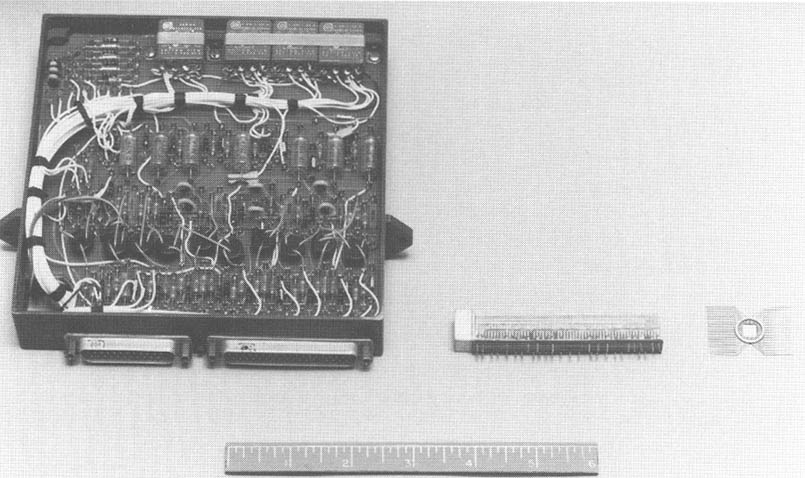

-
Computers in Spaceflight: The NASA
Experience
-
- - Chapter Five -
- - From Sequencers to Computers:
Exploring the Moon and the Inner Planets -
-
- Viking computer
systems
-
-
- [154] Viking missions
to Mars were among the most complex ever executed by an unmanned
spacecraft. Two probes were launched in 1975, with landings
planned for the Bicentennial Summer of 1976. The project was
controlled by the NASA Langley Space Flight Center, making it
unique among deep space projects. Major work began in 1970, with a
planned 1973 landing put off until 1976 because of budget
cuts69.
-
-
-
[155]
-

-
- Figure 5-4. The Viking Orbiter and
Lander each carried dual redundant computer systems. The Lander is
in the elliptical shroud. (JPL photo 293-9157)
-
-
- The Viking mission profile was a combined
orbiter/lander. NASA had successfully orbited Mars with two
Mariners in 1971. The Viking Orbiters were to conduct much the
same science and imaging experiments as their smaller
predecessors. But the Lander was a dramatic addition: it would be
the first spacecraft to land on a planet that had a chance of
harboring life as we could understand it. JPL got the contract to
develop the Orbiter as a result of its Mariner experience. Because
JPL maintained the Deep Space Network and an existing control
center, it also got the mission support contract. The surprise for
JPL was that the Martin Marietta Corporation's Denver division
received the contract for the Lander. JPL had built the only U.S.
unmanned landers, the Surveyor moon probes. Despite that
experience and the difficulty of coordinating work on the Orbiter,
Lander, and mission support in sites ranging from California to
Denver to Virginia, Martin Marietta was
chosen.**
-
- Both the Orbiter and Lander carried dual
redundant computer systems. [156] JPL had evolved
past the programmable sequencer stage and flew a device called the
Command Computer Subsystem (CCS) on the Orbiter. The Lander
carried the Guidance, Control, and Sequencing Computer (GCSC). On
both systems JPL and Martin demonstrated exceptional competence in
software engineering in the areas of documentation and
configuration control. JPL was essentially programming its first
flight computer. The standards and practices used during the
Viking project surpassed all but the Shuttle on-board software in
quality. Somehow JPL avoided the trial and error learning process
Johnson Space Center went through with the Gemini and Apollo
flight software. On the other hand, Martin Marietta typically used
good software development practice. Along with other defense
contractors such as Boeing Military Airplane Company and TRW
Corporation, it was among the leading producers of software in the
world. Whereas commercial computer companies such as IBM,
Honeywell and Digital Equipment have generally written systems
software for their own products, large-scale applications software
has been the domain of vendors supplying the military services
with command and control systems and embedded software in weapons.
Martin Marietta is such a vendor and subscribed to military
contract specifications that required the use of strict software
engineering principles. That experience carried over to Viking,
prompting an innovative method of developing the flight program
that holds promise for future space systems.
-
-
- Viking Orbiter CCS
-
-
- The Viking CCS made it possible to
increase the results of the Orbiter mission many times over the
Mariners of 1971. According to one designer, the 512-word Central
Computer and Sequencer would have returned less than a hundredth
of the data received from the Orbiters70. JPL considered several designs for the Viking
computer, finally settling on the eventual Command Computer
because of its simplicity. It had the least number of parts and
was similar to prior systems in concept71.
-
- Viking's CCS was the first JPL command
device to be fully redundant. Mariner missions that retained the
original hard-wired sequencer to back up the programmable
sequencer were redundant in the same way the Apollo lunar
excursion module (LEM) had computer redundancy: two different
systems could accomplish some, but not all, of the other's
functions. The dual redundancy of the Viking subsystem was more
like Skylab's computer system, with two power supplies, two
processors, two output units, two discrete command buffers, and
two coded command buffers. Interrupts and level inputs to the
system were split and thus delivered identically to both
processors. [157] Processors and output units were cross strapped so
that in case of failures they could be reassigned. The hardware
requirements document generated by JPL called this type of
redundancy "single fault tolerance," in that each component had a
backup, making possible extensive redistribution of
functions72. In practice, the two sets of computers were useful
because, at times, there was too much for one computer to
do73. Although the designated secondary processor and
memory were rarely on line, certain operating modes called for
dual processing. Requirements specified three operating modes:
individual, where each computer could be working on different
events; parallel, where each computer worked on the same event;
and tandem, where each computer worked on the same event and the
output units were voted in a manner similar to that used on the
Mariners when the two sequencers were in action
together74.
-
- In general, the design of the processor
was exceedingly simple, yet fairly powerful, as indicated by the
use of direct addressing, a minimal set of registers, and a
reasonably rich set of 64 instructions. The key is that the design
placed relatively light demands on spacecraft resources while
replacing both the programmable sequencer and the command decoder
used in the Mariners. The fact that the processor was later
adopted by the Voyager project as its Command Computer and
modified for use as the attitude control computer is not only a
statement of JPL's frugality but also a testament to the
versatility of the design.
-
-
- Software Development Practices
for the Viking Command Computer Subsystem
-
-
- By the time Viking was under development,
JPL had over a decade of ground software experience, with
resulting institutional development standards. Most space-related
software done at JPL in the 1960s was for the Deep Space Network
and the large computers in the mission support area. Viking was
the first flight software project, so it was remarkable that
effective software standards were in effect from the
beginning.
-
- JPL's project organization assigned each
subsystem a Cognizant Engineer responsible for the overall
development of the component. For the CCS, Wayne H. Kohl was the
"Cog Engineer." Samuel G. Deese and T. K. Sorenson also signed the
hardware and software requirements documents and were heavily
involved in the development of the computer. Significantly, JPL
also assigned a Cognizant Software Engineer, R.A. Proud. JPL's
project management apparently believed that software could be
engineered, like hardware. Both hardware and software had
requirements documents that set forth the....
-
-
-
[158]
-

-
- Figure 5-5. A block diagram of the
Viking Orbiter Command Computer Subsystem hardware. This basic
dual computer configuration was used for both Viking computers and
all three Voyager computer systems. (From Kohl, Viking Orbiter
Computer Command Subsystem Hardware)
-
-
-
- .....functional specifications for the
Command Computer and its software load75. These were followed by detailed design
documents.
-
- Design documents generated for the Viking
software and available to programmers were based on a software
design description. That volume contained an overview to the
mission and the software architecture, and, for each routine,
detailed process descriptions, entry/exit points to other
routines, variables and their descriptions, constants, and other
relevant notes. A flowchart followed each routine's narrative
description. Appendices to the document included a hardware
description and a reference guide to the instruction set.
Programmers were expected to use the design description as a
manual. Volume two of the document contained the assembly listings
of the resulting flight routines. By opening both volumes to the
same routine, it was possible to easily follow the logic of the
programs by reading both the narrative and the comments on the
listing.
-
- [159] Box 5-3: CCS
Hardware
-
- The Command Computer's central processor
contained the registers, data path control and instruction
interpreter76. The machine was serial in operation, thus reducing
complexity, weight, and power requirements. It had 18-bit words
and used the least significant 6 bits for operation codes and the
most significant 12 for addresses, as numbered from right to left.
This permitted 64 instructions and 4K of direct addressing, both
of which were fully utilized. Data were stored in signed two's
complement form, yielding an integer range from -131,072 to
+131,071. Average instruction cycle time came to 88 microseconds.
Thirteen registers were in the Command Computer, mostly obvious
types such as an 18-bit accumulator, 12-bit program counter,
12-bit link register that pointed to the next address to be read,
and a 4-bit condition code register that stored the overflow,
minus, odd parity, and nonzero flags77.
-
- Timekeeping on the Orbiter was in three
units. The clock issued interrupt pulses every hour, second, and
10 milliseconds78, similar to the sequencer clocks used in Mariner,
save that the 10-millisecond pulse provided finer timing. Pulses
entered an interrupt processor that collected and interpreted them
before transmission to the central processor. The interrupt
processor had 32 interrupt levels, and constantly scanned for the
highest priority task being requested79. Thus, the Command Computer had the same
Interrupt-driven concept used in the Apollo and Shuttle manned
spacecraft computers and the NSSC-l, but it was accomplished in
hardware rather than software.
-
- Viking's Command Computer used 4K of
plated-wire memory80, divided into four equal parts. The first three
could be set as either read only, write protected, or read/write,
but the last 1K was always read/write81. On Viking the first 2K was specified as read only,
and the program instructions stored there. The second 2K was
read/write, and the data resided in that segment.
- Software development was guided by the
"Viking 1975 Orbiter CCS and Support Equipment Software
Development and Control Plan," which set the standards for
production of the flight software and software for ground support
and testing equipment. The Cognizant Software Engineer, Cog
Engineer, Subsystem representative to the Systems Engineer, and
all software design team members reviewed each routine as it was
designed and coded82. Coding was assisted by the Orbiter Sequence
Translator Program, or OSTRAN. Code produced by the programmers
was verified by running it in both the CCS Breadboard and the CCS
Programming System. The former was a complete hardware version of
the Subsystem, and the latter a software simulation. The Command
Computer Subsystem Technical.....
-
-
-
[160]
-
- 
-
- Figure 5-6. Different types of
packaging used in the Viking computer system. Note the discrete
components in the leftmost device. (JPL photo 360-276-AC)
-
.....Manager, hardware Cog Engineer, and Cog
Software Engineer each compared the performance of the routines on
these devices83.
- Testing and system integration was done
from the bottom up. Programmers tested individual routines through
all options at expected times, all expected branches, and all
expected interaction with other routines, and then through
selected failures84. As with any real-time system, it was impossible to
test for all possible failures. After this unit testing, the
programmers integrated the routines with related code and ran it
on either the breadboard or the flight hardware.
-
- As with the most successful software
development projects, JPL exercised strict configuration control.
Even though the memory was eight times larger than that on the
programmable sequencers, so many functions were transferred from
hardware to software that memory was constrained from the
beginning. Viking Orbiter Data Management Office handled changes
to the documents. The Configuration Control Board, consisting of
the Subsystem Technical Manager, the CCS Support Equipment Tech
Manager, the hardware Cognizant Engineer, and the CCS Software
Engineer, decided on software changes or what to do about
discrepancies between the design and code or
performance85.
-
-
[161] Box 5-4: CCS
Software Structure
-
- The Viking Command Computer software
structure appears different from others described in this volume
because of the apparent lack of an operating system or executive
program. The functional block diagram used in the CCS requirements
document (reproduced here) shows that all inputs, either
interrupts, or "level" inputs, enter a software block that
contains conditioning routines. The TRAP routine maintains 32
memory locations that correspond to the 32 levels of the interrupt
processor. Each location contains an instruction to be executed or
an address to branch to if the appropriate interrupt
occurs86.
-
- After clearing the input conditioning
block, signals are either routed to the command decoding software
or to the generation software. The command decoder does just what
its title implies: examines the bit streams of commands routed to
it for specific orders and then routes them to either the event
generator, the output unit driver, or the telemetry
processor.
-
- The event generator block contains the
most complex software in the system. Its chief routine is the
Master Table Driver. Software requirements documents specified
that the Master Table Driver handle all time sequenced events,
maintaining up to 20 tables at once87. Thus, it was the replacement for the programmable
sequencer carried on previous missions. Implementation of the
Master Table Driver was the TARMEX routine: Timing and Region
Management Executive containing many of the common executive
functions centralized in other machines. TARMEX is referred to as
a "time-sharing executive" in the software documentation, but that
is perhaps too ambitious a title88. It did regularly scan through the event tables and
maintain the time countdowns for a number of mission events. At
454 statements, it was one of the largest routines on the
spacecraft. Functionally, it acted like any other sequencer JPL
built, the difference being that it was implemented in software
and thus highly flexible, which contributed to its success on the
Viking mission and later on Voyager.
-
- Other routines in the event generator were
used less comprehensively than TARMEX. The Data Acquisition and
Playback Routine controlled science instruments, imaging, and data
storage until broadcast to earth. The accelerometer control
routine was needed because for the first time an unmanned
spacecraft would have active control over engine burns, rather
than depending on precalculated timed firings. In the past, the
maneuver and insertion firings were made based on calculations
done before the flight and implemented as timed sequences in the
Central Computer and Sequencer.
-
- [162] Viking carried
accelerometers and a computer, making it possible for the
spacecraft to fire its engines and calculate when to turn them off
in real time based on velocity figures uplinked in advance from
navigation computers. A Launch/Hold/Reset routine handled
spacecraft functions as a fixed sequence during the prelaunch,
launch, and early cruise phases of the mission, with the
capability to reset its timers if holds occurred in the
countdown89. This was a more robust version of the sequences
carried for the first phase of previous missions. An Error
Recovery routine included a programmable version of the 66
2/3-hour command loss sequence implemented in Mariner missions.
The computer could be programmed to check for commands at varying
times. During cruise, the command loss routine could be set to
check just once a week or more, and changed to check at much
closer intervals near encounters90. Deep Space Network resources were thus less tied
up during relatively dormant periods of the mission, as commands
did not need to be sent just for the reason of keeping the command
loss sequence from starting.
-
- Remaining software blocks were the output
driver, which transferred output signals to the appropriate output
unit for distribution to the command buffer and eventually the
affected systems, and the telemetry processor. The telemetry
routine took over some of the functions previously done by the
hard-wired Flight Data System. The Flight Data System on Viking
had its own dual 1K memories of 8-bit words. Command Computer
software helped manage that memory and prepare data streams for
transmission. The Checksum routine was similar to that used in the
Central Computer and Sequencer, except that a range of addresses
could be specified, instead of the entire memory being
summed.
-
- Viking Orbiter software had to be written
in an assembler, which fortunately had relocatable addresses,
simplifying the maintenance task. The 64 instructions were mostly
common to other computers, but there was no multiply or divide.
There were two sets of loads, stores, increments, and subroutine
calls: one used during independent operation and one aimed at dual
operation, so that the two memories could be kept
equivalent91. Even though many interrupts were available, most
routines as coded had all but the internal error and counting
interrupts disabled92. Many routines were free to run out without being
interrupted, in contrast to the highly interrupted Apollo and
shuttle software. Programmers avoided the memory and processing
time overhead required to preserve the current accumulator and
register contents during an interrupt.
-
-
-
[163]
-

-
- FIGURE 5-7. A circuit board with
integrated circuits used in the Viking Orbiter computers. (JPL
photo 360-371-AC)
-
-
-

-
- FIGURE 5-8. One of the Viking
Orbiter plated wire memories in a vibration test device. (JPL
photo 360-276-AC)
-
-
-
- [164] Instituting
concepts of full documentation, configuration control, and
engineering principles, such as modularization in software
development, made it possible to have a successful flight program
at launch and to remain successful throughout a long mission. Some
of the people involved in Viking left the project before the
Orbiters reached Mars, either to other projects, or to leave the
Laboratory. With the materials and techniques available to
maintain the computer software, it was possible to bring new
people into the project and have them make necessary updates and
upgrades to the flight program. This capability is as important to
a long-term mission as the reliability of the hardware. JPL's
concern for Grand-Tour-length reliability in hardware, exemplified
by STAR, also extended to software. Without such an attitude the
later Voyager would be much more difficult to maintain as an
active project.
-
-
- The Viking Lander
GCSC
-
-
- Martin Marietta's Denver division
developed the computer system for the Viking Lander in an
innovative way. To this point the stories of the development of
various on-board computer systems have a similar theme: Project
managers determine the expected specifications of the system,
choose the hardware, and develop the software. By the 1980s, the
danger of this approach became evident to computer and software
engineers and to some of their customers. Choosing the hardware
first and then developing the software for an embedded computer
system runs the risk of the eventual software exceeding the
hardware's capabilities or capacity. If the hardware is chosen
before the full requirements of the mission are known, which was
often the case, then the software is written in such a way as to
compensate, thus exceeding the memory size because the
compensating programs were not in the original software estimate.
If the hardware turns out to be more powerful than needed, the
software is expanded to take advantage of the additional
capability, so it pushes the hardware to its limits. Either way,
the development of the computer system and its software becomes
more complex, expensive, and late. The Gemini, Apollo, Shuttle,
NSSC-1, Mariner X, and Galileo projects all suffered because of
insufficiencies in computing power or memory, largely because of
poor specifications.
-
- Martin Marietta did a number of military
projects that repeated the same mistakes that the space program
had made in regard to onboard computers. In 1970, when the company
received the Viking Lander contract, it determined to follow a
different course of development by adopting a policy of "software
first"93. This was one of the earliest attempts to break the
paradigm of specification/ hardware selection/ software
development/ reaction to changed requirements, a....
-
-
-
[165]
-

-
- FIGURE 5-9. A block diagram of the
Viking Orbiter software. This same software structure was used for
the Voyager Command Computer Subsystem software (From Kohl, Viking
Orbiter Computer Command Subsystem Software)
-
- [166] ....cycle that
crippled many projects. The decision turned out to be highly
successful. The Air Force studied the results and disseminated the
technique. Thus, it contributed to a shift in attitude which,
though only barely established 15 years later, is still a turning
point in the history of computing.
-
- "Software first" techniques make it
possible to compensate for the severest deficiency of most
projects, incomplete or incorrect requirements specification.
Hardware decisions and software sizing are based on the
requirements document developed early in the program. Users of the
eventual product must be careful in contributing to this document.
In the Apollo program, NASA gave MIT a broad statement of
requirements, basically to develop a guidance system capable of
navigating a spacecraft to the moon and back. Painful lessons
learned as a result of the Apollo project included a greater
appreciation for more detailed specifications. As a result, the
requirements for the Shuttle were among the most outstanding
written to that time. Still, memory estimates were far off,
stretching the computer system to its limit. In contrast, the
Viking Lander software developed contemporary to the Shuttle kept
to its original boundaries, staying within the hardware
capabilities of its computer. Both Shuttle and Viking had
extremely high change traffic, and both project management teams
anticipated many changes; but the software first philosophy
handled change differently. Martin Marietta recognized that it is
easier to change software independently of hardware than to react
to revised specifications. More importantly, it recognized that if
it is necessary to change hardware requirements, it is easier to
change before it is purchased than afterwards. If the software is
developed first, the hardware can be bought to fit it. Martin
Marietta completed the flight software for the Lander 1 year
before the hardware was delivered, which was only 2 months before
the launch94! The company accomplished this feat because
detailed timing and sizing experiments gave confidence in the
eventual hardware selection95.
-
- To implement the concept of software
first, Martin developed a Viking Controls Mock-up Unit (VCMU)
using two Standard Computer Corporation IC-7000 computers.
IC-7000s had a two-section CPU. The Viking team microprogrammed
one processor as an emulator of the proposed GCSC on the Lander;
the other processor acted as a simulator of the other spacecraft
systems96. This system could be linked to an IBM 360/75 used
at JPL for mission control, thus providing simulations of flight
operations97.
-
- Differences between an emulator and a
simulator are rather fine but very important in this case. A
simulator imitates a computer using software that functions
interpretively. For example, a simulator running a program written
in the machine language of the target computer executes a set of
instructions in its own machine language that has the same effect.
The problem with this method is that it has variable
[167]
results. Even though most simulations are done on computers more
powerful than the target machine, performance is far less, and a
real-time simulation is virtually impossible. Even such simple
instructions as an ADD, which can usually be simulated using a
single instruction, run much slower because of the software
overhead involved in maintaining pseudoregisters and fake memory.
Programs that run in a minute on the target machine might take as
long as an hour on a simulator.
-
- An emulator runs the target machine's
program in near real time. In fact, its performance on some
instructions is likely to exceed that of the target due to the
performance difference between the emulator and the actual
hardware, but other instructions run slower, creating something of
a balance. Microprogramming makes it possible to achieve these
results. Older computers had the control unit that handles the
flow of signals in the computer permanently hard-wired during
manufacture; therefore, the way a particular computer executed
instructions was fixed throughout its operating life. As early as
1950, Maurice Wilkes of Cambridge University suggested
representing the control paths in the form of special software. He
called these control programs "microprograms" and their
instructions "microinstructions" to differentiate them from higher
level programs and code98. Such "microcode" could not be implemented in the
1950s because suitably cheap and permanent memory was not
available. The IC-7000 was a microprogrammable machine, so its
microcode could be changed by Martin Marietta to make the
processor execute instructions like another computer. Martin
started with a reasonable set of instructions and tried to write
the software. If a problem or change arose that would be better
handled by hardware or a new instruction or two, the microprograms
for the new operation codes were installed99. In this way, the hardware evolved along with the
software, and when a fully functioning software load was complete,
the hardware requirements were also complete.
-
- Ironically, other constraints eventually
thwarted Martin's plan for the computer hardware. Developers
working on other subsystems of the Lander had trouble delivering
hardware that could accomplish all the mission goals without
increasing its weight. So when the time came to purchase the
computer, the weight gains by the other systems had to be
compensated for by the only system without hardware. Therefore,
the computer that flew on Viking was actually the "third best" of
those available, its chief deficiency being a poor instruction
set, but it weighed less than the first choice100. Martin changed the software affected by the less
powerful computer. Even though the optimum computer did not fly,
the principle of software first was demonstrated. Additionally,
Martin introduced the concept of using off-the-shelf equipment for
unmanned spacecraft projects. Despite the care taken to anticipate
problems, some of the most common [168] development
difficulties occurred. In an environment created to anticipate
change, the lack of detailed software requirements and a large
number of change requests still caused serious
problems101. At one point, testing came to a standstill, which
turned out to be fortunate in that the Systems Engineering
Director began to take software seriously and to treat it like
hardware, a lesson painfully repeated on project after
project102. And again, memory sizing, though controlled, posed
difficulties. Martin completed the prototyping for the Lander
software in July 1971. Its actual size at that point was 13K.
Martin engineers specified 18K, anticipating inevitable growth to
accommodate new requirements and set up a control group to ensure
that the memory stayed under that size. Twice during development
the software exceeded memory limits, first in March-May 1973, when
it topped off at 18.5K, and then in June 1974, when it hit 19K.
Both times the flight program was reduced to the correct
level103. These overruns are minimal compared to those of
the Apollo and Shuttle programs.
-
- Eventually the software for the Lander
reached 20,000 words and required 1,609 man-months to produce (the
reason more than 18,000 words are shown here is that some routines
used after landing overlaid landing software). Over 200,000
instructions of emulator and simulator software were produced,
requiring just 494 man-months104.
-
- Differences in the proportion of
development time to instructions are because the Lander software
was hand-coded, whereas the simulators could be written with the
aid of assemblers and higher level language compilers. Langley
Research Center project managers determined that the flight
software would be verified by an independent organization, so TRW
Corporation was contracted to provide such services on site at
Langley105. Such completely independent verification is
somewhat more useful than an "independent" quality assurance group
within a company, as it has a more adversary relationship.
-
- [169] Box 5.5: Viking
Lander Computer Characteristics
-
- The GCSC consisted of two Honeywell HDC
402 processors, each with 18K of 2-mil plated-wire memory. These
processors had the capability of eight levels of interrupt and an
average 4.34-microsecond instruction cycle
time106. Original plans for the Viking Lander specified a
single computer for the landing phase and another for on-surface
operations, but when the project was delayed this changed to a
dual redundant system similar to the Orbiter
CCS107. Honeywell's computer had a 24-bit word size, with
47 instructions, and used two's complement representation for
data. Compared to the NSSC-1 and Viking Orbiter computer, it is
slightly faster than the former and much faster than the latter,
with better numerical precision than both.
-
- Lander software structure reflected common
short-cycle real-time control concepts such as those used in the
Space Shuttle Main Engine Controllers. During descent, the
software executed a 20-millisecond control loop, cycling through a
set of routines108. Martin claims that the executive was a "virtual
machine" facility, in that each process "thought" that it had its
own machine and was not sharing resources with other
processes109. Galileo Command and Data System software
developers used the same terminology, but on that spacecraft the
virtual machines resided on several microprocessors and were more
truly "virtual." Martin's system is more like the cyclic
time-sharing executive found in the Shuttle Backup Flight
System.
-
- One problem Lander software developers had
was that no adequate assembler was ever written for the computer,
perhaps because of the changing nature of the instruction
set110. Patches had to be hand-coded in octal, with many
jumps to unused memory space because of the lack of an assembler
with relocatable addressing. A programmer trying to trace a
routine thus had to contend with having to go back and forth on
the memory map to follow the logic. JPL's Viking programmers could
keep their routines in contiguous memory locations by reassembling
the code after changes. The assembler would automatically move the
data around to accommodate the modifications.
- Lessons learned in the Viking Lander
computer system development program influenced Martin Marietta's
future work. After the VCMU outlived its usefulness, the
organization and equipment were renamed EMULAB to reflect what
takes place inside it. The Air Force requested that Martin study
its software development practices during its participation in the
space project, resulting in a report entitled Viking Software
Data111 and issued by the Rome Air Development Center at
Griffith Air Force Base, New York. This report and the experience
gained influenced the continuing shift from "hardware first" to
"software first" among some contractors in the late 1970s and
early 1980s. As microprocessors become military- and space-rated,
it will become easier to adopt such a sequence because readily
available microcomputers can be adapted to specialized functions.
Users are also becoming more likely than before to adopt
microprogramning to tailor instruction sets, as in the shuttle
general-purpose computers and the Galileo attitude control
computer.
-
-
** Edward and Linda
Ezell make the point in their book On
Mars (NASA SP-4212) that part of
the reasoning for choosing Martin Marietta was that the project
management team at Langley felt that JPL would be overtaxed
handling responsibilities for two spacecraft. Also, the difficulty
of integrating the Lander components was greater, and a large
aerospace contractor such as Martin had more extensive experience
with such activity.